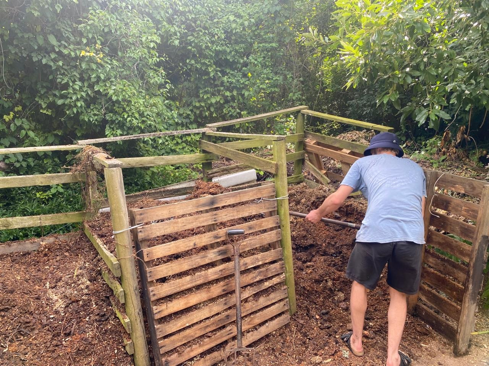

Unpacking the Magic of Composting
Hi Gooi Friends and Family!
My name is Kobus, I take some of the Gooi deliveries and facilitate the scraps to scrumptious compost transition. I'm excited to share some of what makes me incredibly stoked about soil, compost and the gooi project!

The excitement comes in levels, so this share is going to be in 3 parts.
-
1) Making compost and how cool it is
-
2) Using compost and how cool that is
-
3) Thinking about making and using compost and how cool that is :)
Entropy broadly refers to the tendency towards disorder and dissipation of useful energy (bear with me). On the whole, the universe tends towards entropy - the universe is cooling down, stars burn themselves out, and things(atoms) fall (drift) apart. An incredible exception to this trend is found with Life - It tends towards increasingly complex order and composition (sometimes referred to as syntropic rather than entropic).
A key aspect of these syntropic life systems is that they include a process that fully decomposes the complex compositions back into building blocks for future life composition.

Avo pip 2 weeks of composting
Processes like photosynthesis and root nitrogen fixation further allow Life to pull additional building blocks out of the atmosphere so that there are even more lego-bricks to play with after each round. These decomposing processes involve a whole orchestra of different tiny life-forms from worms, to fungi, to bacteria, archaea, nematodes, and microarthropods. Given enough time this dream team can turn any complex organic compositions back into legos for Life to play with.

Composting is the process of setting up the ideal playground for the dream team to do what they do best. Whereas a pile of garden clippings will take about a year to turn into compost, the process used for maximum dream team action (The Berkeley Method of Hot Composting) gets that process down to around 20 days! We do this by getting a diversity of microbes (from horse manure, forest leaves, previous compost, and diverse bits of organic matter), giving them as much energy as they need (carbon in the form of wood shavings), and then loads and loads of nitrogen (Gooi food scraps) to help them access the carbon and make more microbes. Mixing all of this in a pile, oxygenating by giving them some breathing vents, and turning the piles over every 2 days, gets us super nutrient rich compost that you can plant seeds directly into. These orchestras of decomposition often get up to 70/80 degrees Celsius and are even used in colder climates to heat greenhouses during winter.
Using compost and how cool that is
My sense is that gardening is generally the gateway to composting. Once you start growing things and want to grow more, the process of facilitating the flourish quickly points you to home-cooking fertility.
Since starting to take the Gooi deliveries last year September it's been feeling like i'm sitting on endless potential!
So far we've fed around 30 Citrus and Olive trees and hopefully rejuvenating the slope they're on in the process.

Planted loads of veggie seeds straight in the compost
And set up 3 new beds at the Oude Molen Eco village
Turning compost is a sweaty and involved process but contemplating the majesty of the processes at play (microbes make the life go round) definitely makes it worth it.
Thinking about making and using compost and how cool it is
Seeing food going from mostly fresh to totally indistinguishable from the rest of the pile in 3 weeks, while at the same time seeing a piece of plastic that found its way into the pile not change in the slightest, is always an interesting piece of thoughtfood. Funny also how it's mostly green plastics (shops tricking our old brains thinking green is good). Reminders to try consider circularity and contributing to the syntropy rather than entropy wherever we go (Pee in the garden rather than in freshwater that gets flushed into the ocean/water your plants with dish/shower water!) Not because it's a bad thing to be part of the entropy (it's the general trend anyway) but because it feels great to contribute to the syntropy.
Having access to an abundance of compost has been a massive game changer and wouldn't be possible without the Gooi community.
If you have a potential compost-intensive project you've been pondering (or if this post starts you on a journey of ponderings) I'd be very happy for you to reach out and try make it happen!
Kobus xxx

Gooi offers weekly collection of food scraps from your doorstep.
Ready to join the food waste revolution?